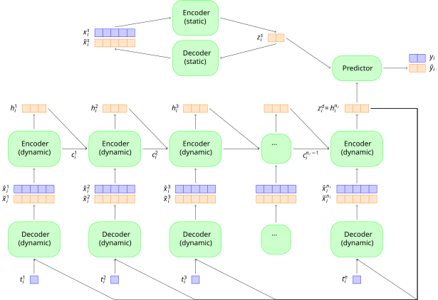

TikZ is a package within a larger PGF package designed to create scientific diagrams. There are many ways of rendering figures using PGF, and today we are going to look specifically at nodes and styles as the building blocks of diagrams. Even this small subset of TikZ is too broad to cover rigorously, so we will rely on a case study to anchor this particular discussion. In particular, we will build towards this the following image:

hello world